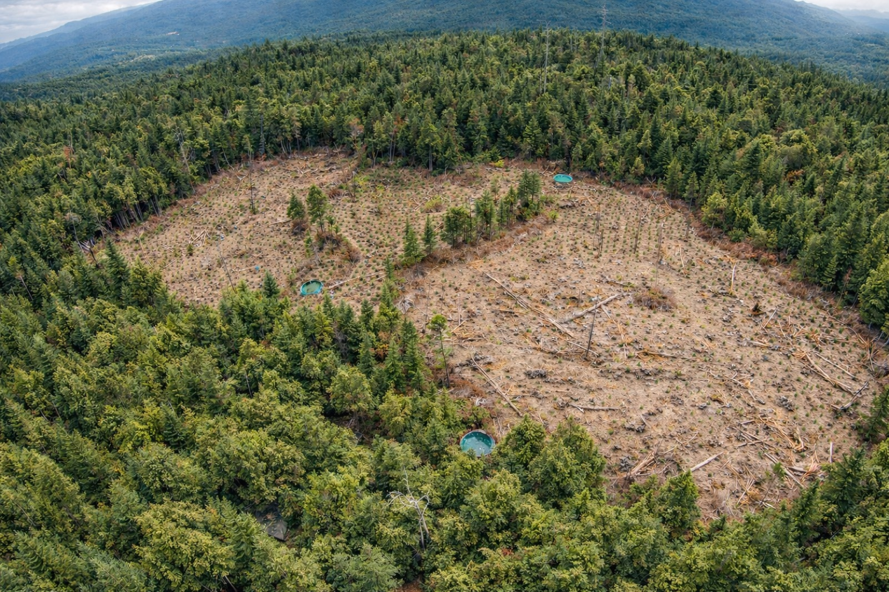

Illegal “Trespass” Cannabis on Tribal Lands
Tribal lands are three times more likely than other land types to be impacted by illegal or “trespass” cannabis grows, causing serious cultural, environmental, and health challenges for California’s rural Tribes. These grows impact watersheds, wildlife, and culturally significant sites. This research, in partnership with a Tribal advisory committee, explores the impacts of trespass grows on Tribal lands and ancestral territories, revealing a cluster of issues surrounding legacy contamination, jurisdictional and enforcement gaps, and Tribal restoration priorities.
Preliminary findings
- California’s Tribal lands are 3x more likely to be impacted than other land types.
- Illegal cannabis is a problem statewide, and Tribes experience its impacts in residential areas, remote areas of the reservation, adjacent private and public parcels, and within their wider ancestral territories.
- Unlicensed cultivators target Tribal lands because of jurisdictional and enforcement gaps.
- For California’s rural Tribes, environmental impacts are also cultural and community impacts, including direct impacts to human health.
- State-led eradication and remediation efforts can deepen harm to sensitive ecosystems and Tribal cultural resources when conducted without Tribal consent, protocols, or cultural monitoring.